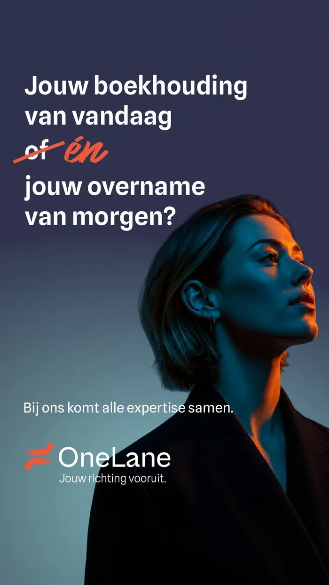
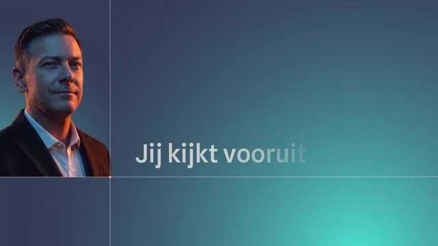
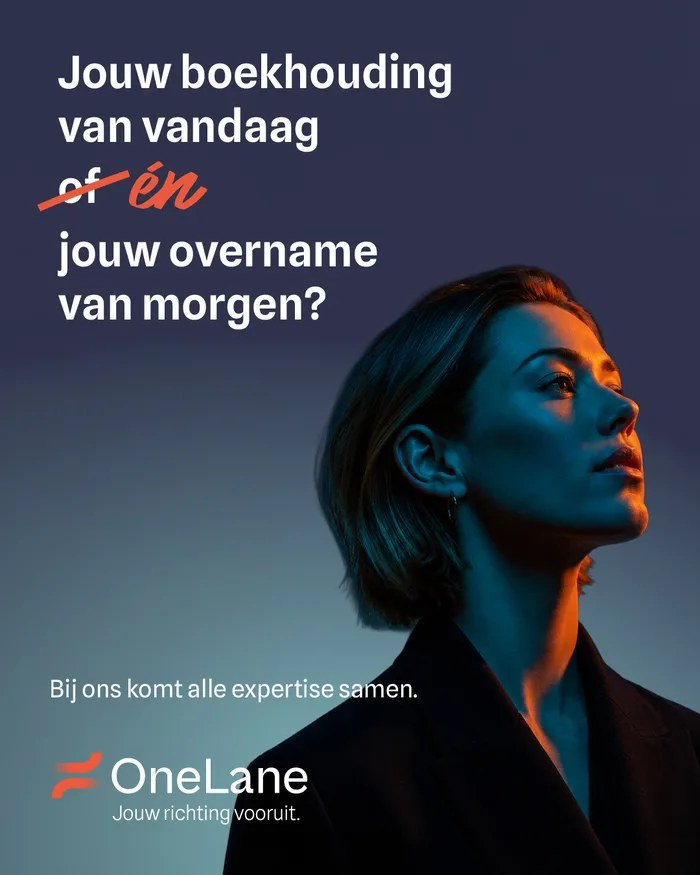
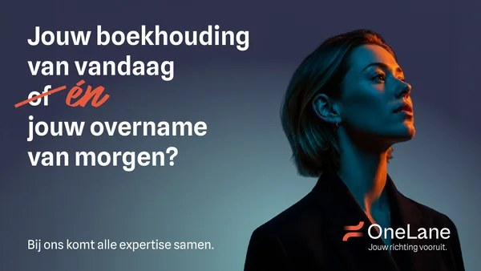

Rebrandingcampagne NOVA
Campagne-evaluatie
Tussenstand t/m 10 november 2026
Project & resultaat
1 · Project · Plan
Van bereik naar bezoek naar herkenning
1 · BEREIK

Video in feed, stories en reels
Aan doelgroep via video Meta, LinkedIn, YouTube + audio op Spotify
2 · TRAFFIC


Afbeeldingen naar de website
Aan videokijkers · Meta, LinkedIn, Spotify-banners
3 · REMARKETING

Tag-on video en afbeeldingen
Aan betrokkenen met social en site · Meta, LinkedIn, YouTube

2x BURST FLIGHTS
NPO Radio 1, Digital Out of Home (90x schermen op NS stations) & Snelweg (8x billboards)
2 · Project · Planning
Campagneplanning per kanaal
Wk 41
5 okt
Wk 42
12 okt
Wk 43
19 okt
Wk 44
26 okt
Wk 45
2 nov
Wk 46
9 nov
Wk 47
16 nov
Wk 48
23 nov
1
2
3
4
Radio
NPO Radio 1
6 t/m 16 okt
2 t/m 13 nov
Digital out of home
NS-stations, snelwegmasten
NS-stations · 5 t/m 11 okt
NS-stations · 2 t/m 8 nov
Snelwegmasten · 2 t/m 8 nov
Socials
Meta, LinkedIn, YouTube
Video- en motion ads
Remarketing: tag-on video’s en afbeeldingen
Digital audio + display
Spotify
6 okt t/m 15 nov
Online video
Ster
10 t/m 15 nov
1
ma 5 okt
Start campagne en dashboard live
2
ma 19 okt
Eerste tussenrapportage
3
ma 2 nov
Tweede tussenrapportage
4
ma 23 nov
Eindrapportage met bereik, resultaat en aanbevelingen
3 · Project · Resultaten vs. projectie
Focus op merkbekendheid geeft resultaat
2,2 mln
Bereik
+68% t.o.v. projectie (1,3 mln)
6,4 mln
Contactmomenten
+55% t.o.v. projectie (4,1 mln)
€ 5,00
CPM
36% goedkoper dan verwacht (€ 7,76)
2,9
Frequentie
7% lager dan verwacht (3,2), vooral door YouTube en Spotify
4.211
Klikken
60% onder doel (10.621), door focus op bereik en herkenning
€ 32.238
Besteed
100% van de planning; 85% van het totaalbudget
8.449
Websitebezoeken
+90% bezoek per week sinds de start
559
Reacties op social
99% positief
Insight
4 · Insight · Kanalen vergeleken
Elk kanaal had een eigen rol
| Kanaal | Besteed | Bereik | Contactmomenten | Frequentie | CPM | € per 1.000 bereikt | Klikken |
|---|---|---|---|---|---|---|---|
| Buitenreclame | € 10.000 | 400.000 | 1.400.000 | 3,5 | € 7,14 | € 25,00 | − |
| Radio | € 8.872 | 536.440 | 1.658.646 | 3,1 | € 5,35 | € 16,54 | − |
| Meta | € 5.150 | 695.820 | 2.302.383 | 3,3 | € 2,24 | € 7,40 | 2.776 |
| € 4.995 | 220.190 | 484.461 | 2,2 | € 10,31 | € 22,69 | 806 | |
| YouTube | € 2.065 | 179.871 | 288.894 | 1,6 | € 7,15 | € 11,48 | 93 |
| Spotify | € 1.156 | 170.764 | 314.826 | 1,8 | € 3,67 | € 6,77 | 536 |
| Totaal | € 32.238 | 2.203.085 | 6.449.210 | 2,9 | € 5,00 | € 14,63 | 4.211 |
Online vs. offline
Online bereikt een persoon voor € 10,55 per 1.000, offline voor € 20,15.
Facebook vs. Instagram
Instagram levert per 1.000 vertoningen 2,8 keer zoveel websitebezoek; op Facebook wordt de video 2,5 keer zo vaak bekeken.
Spotify vs. YouTube
Beide worden vrijwel helemaal afgemaakt (92% en 96%); Spotify is goedkoper per contactmoment.
Meta vs. LinkedIn
Meta is 4,6 keer goedkoper per contactmoment; op LinkedIn klikt men vaker door (0,17% tegen 0,12%).
5 okt t/m 10 nov. Bereik en contactmomenten buitenreclame en radio volgens inkoop; online volgens de platforms.
5 · Insight · Website
Het bezoek groeit sinds de start
8.449
Websitebezoeken
+90%
Bezoek per week
Laatste volle week tegen de eerste campagneweek
+178%
Zoekverkeer via Google
Op merknaam OneLane versus eerste campagneweek.
36 aanvragen
18 contactaanvragen en 18 adviesgesprekken, de helft via de Engelse site.
Van alle 285 ingestuurde formulieren was 1 op de 8 een aanvraag.
Alle 285 ingestuurde formulieren per pagina
| Pagina | Aantal |
|---|---|
| Homepage (NL en EN) | 137 |
| Locatiepagina’s | 23 |
| Nieuwsbericht nieuwe naam | 22 |
| Kennis & inzichten | 21 |
| Pagina | Aantal |
|---|---|
| Contactpagina | 16 |
| Ons verhaal (NL en EN) | 12 |
| Actualiteiten | 11 |
| Plan een adviesgesprek | 4 |
6 · Insight · Key insights
Vijf dingen die we nu weten
1
Het bereik ligt ruim boven plan.
2,2 mln personen bereikt, 68% meer dan de projectie van 1,3 mln, bij 100% van het geplande budget. Een contactmoment kostte gemiddeld € 5,00 per 1.000 in plaats van € 7,76.
2
Radio en outdoor samen laten OneLane zoeken.
Van 2 tot 8 november 175 bezoeken per dag via Google (+160%) en 97 direct (+74%), tegen de weken zonder radio en outdoor.
3
Online levert de klikken, maar minder dan gepland.
4.211 klikken, waarvan 2.776 via Meta en 806 via LinkedIn. Dat is 60% onder het doel van 10.621.
4
Kort wint.
De tag-on van 6 seconden wordt op Meta 37 keer zo vaak helemaal bekeken als de video van 20 seconden.
5
LinkedIn kan scherper.
Instapniveau krijgt 32% van de vertoningen; eigenaren en accountancy klikken twee tot drie keer zo vaak door.
7 · Insight · Learnings & vervolg
Wat we meenemen
Learnings
Radio bouwt status, online zorgt voor actie
Op radiodagen 2,4 keer zoveel zoekverkeer en 57% meer direct bezoek. Klikken naar de site komen vooral uit online.
Video, tag-on en afbeelding werken als keten
De video vertelt het verhaal en bouwt doelgroepen, de tag-on zorgt voor herkenning (5 keer zo vaak afgekeken) en de afbeelding haalt de bezoeker binnen (2% CTR).
Branding miste een concrete call-to-action
36 aanvragen in vijf weken en bezoekers uit advertenties blijven beperkt. Geef een duidelijke vervolgstap mee, zoals een adviesgesprek.
Volgende keer beter
Ingeboekt materiaal nalopen
De radio-tag-on was in flight 1 niet ingeboekt. Dit is achteraf hersteld met een 20% uitbreiding van zendtijd in de 2e flight.
Meetbaarheid
Koppeling oud GA4 domein, geen dynamische UTM-tags en instellen van conversiedoelen; nu herkent GA4 maar beperkt de herkomst van advertentiebezoeken en contacten.
Remarketing vroeg vullen
Remarketing groepen zijn met de huidige campagne opgebouwd en voldoende groot om met vervolg campagnes aan te spreken op YouTube & Spotify.